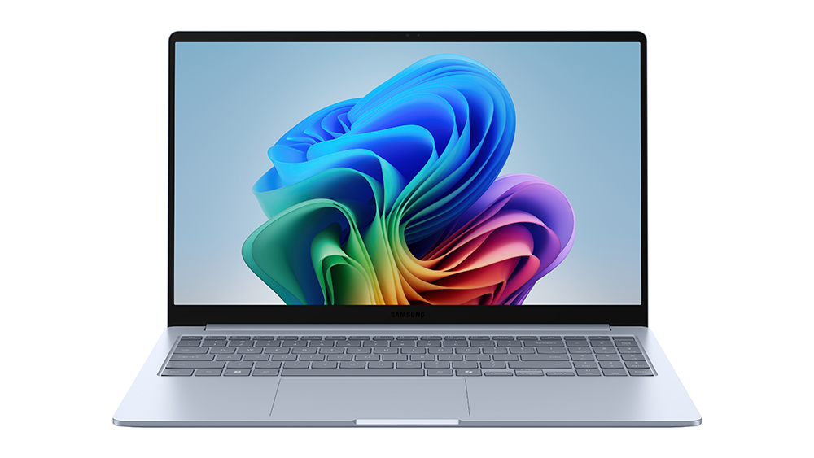

Alan Turing aide à décrypter Enigma pendant la Seconde Guerre mondiale
ENIAC : premier ordinateur électronique utilisé pour les calculs
Architecture de Von Neumann utilisée dans tous les ordinateurs
Apparition des microprocesseurs
Ordinateurs rapides avec systèmes modernes
| Époque | Taille | Puissance |
|---|---|---|
| ENIAC (1945) | Très grande (30 tonnes) | Faible |
| Aujourd’hui | Très petit | Très élevée |